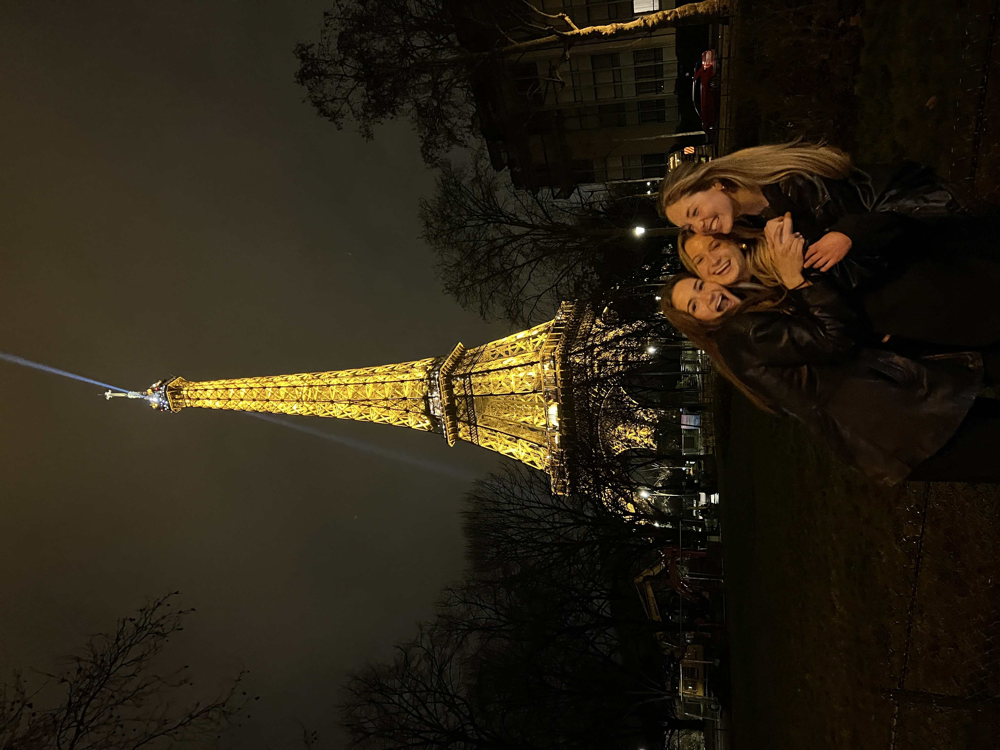

I studied abroad last semester in Barcelona, and travelled every weekend. It was one of the most amazing experiences and I am so grateful I was able to take advantage of the opportunity.
Destinations
Paris
Amalfi Coast
Copenhagen
Destination Gallery
Each destination below has a space for a short paragraph and an image.
Paris

Paris
Paris was one of the most beautiful places I have ever been to. I was with two of my best friends and we ate our way through the city. We wore berets, got crossaints at every corner, and were tourists at the Palace of Versailles. I would love to go back someday!
Destination 2
One of my other favorite trips was the Amalfi Coast. We were with a big group of boys and girls and went to Capri, Positano, and Sorrento throughout the weekend.
Destination 3
Caption for destination 3
My next favorite trip was Copenhagen. There was amazing shopping and views throughout the city and we loved wandering the streets aimlessly. The sun came out while we were there which made it much more enjoyable as well!